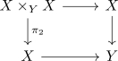
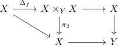

cotangent complex of a flat/tor independent morphism and conormal module of the diagonal
Proposition
Let $f: X \rightarrow Y$ be a morphism, such that $f,f$ are tor independent, i.e.,

is a tor independent square of schemes.
Then there exist two equivalences
\begin{align*}
\mathcal{L}_{X/Y} \simeq \mathcal{L}_{\Delta_f}[-1]
\end{align*}
for $\Delta_{f}: X \rightarrow X \times_{Y} X$.
Proof
consider the diagram

and apply the fundamental properties of the cotangent complex